Nel tentativo d'invogliare quanti più visitatori possibili ad approfondire e ad eseguire personalmente le simulazioni presentate nella pagina "Caduta in mare", ho preparato questa pagina per spiegare in modo molto pratico e senza formalismi:
la matematica che sta alla base di tali simulazioni;
i metodi numerici che possono essere usati per effettuare le simulazioni;
come eseguire le simulazioni direttamente online, senza bisogno d'installare niente nel proprio computer.
Il fatto di evitare formalismi rende imprecisa la definizione delle entità matematiche che saranno incontrate, ma non inficia in alcun modo la validità e la sostanza dei concetti esposti.
I visitatori che vorranno approfondire gli argomenti qui affrontati consultando gli innumerevoli siti di matematica, ne trarranno un sicuro beneficio, ma ciò non è richiesto per la comprensione delle simulazioni effettuate nel sito, in quanto le spiegazioni e gli esempi forniti in questa pagina dovrebbero essere sufficienti per avere la base minima indispensabile.
Presentare direttamente il programma che simula la caduta di un motore del DC-9 senza prima spiegare le nozioni matematiche di base sarebbe stata una cosa priva di senso, perché ci si sarebbe ritrovati davanti ad un listato di un programma incomprensibile che, una volta eseguito, produce numeri altrettanto incomprensibili e che non si sa da dove siano saltati fuori.
Se si avrà la pazienza di leggere e comprendere i pochi concetti di base qui di seguito esposti, si dovrebbe essere in grado di poter giudicare la correttezza del programma e apprezzare la validità del risultato.
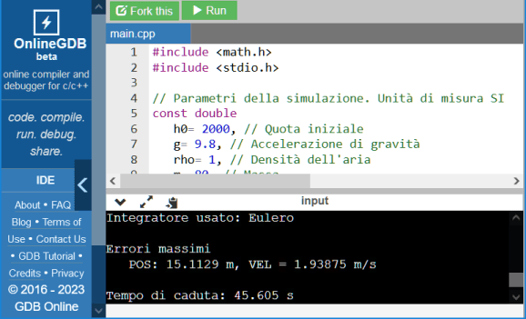
Il sito GDB Online è uno tra i tanti che offrono la possibilità di scrivere ed eseguire programmi nel linguaggio C++ direttamente online, senza bisogno d'installare niente nel proprio computer.
Siccome troverete sempre il programma già scritto e pronto per essere eseguito, non è necessario saper scrivere i programmi, ma è comunque indispensabile avere le basi per comprendere il significato delle righe di codice che traducono le equazioni nel linguaggio comprensibile al computer.
Per eseguire i programmi che di volta in volta dovranno essere usati, basta cliccare il pulsante verde "Run"; dopo qualche istante, il programma parte e genera le righe che mostrano il risultato.
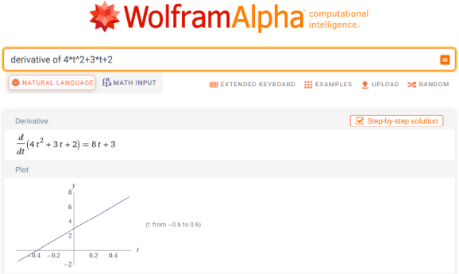
Poiché questa pagina non è nata con lo scopo d'insegnare la matematica, ma con quello di utilizzarla per risolvere alcuni problemi di fisica (come la caduta libera di un corpo in aria), la risoluzione delle equazioni che incontreremo sarà affidata all'autorevole sito Wolfram Alpha.
Sebbene non sia nemmeno ipotizzabile che un sito come quello possa commettere errori su operazioni che, in massima parte, sono di banale risoluzione, bisogna sempre tener presente che in questo sito niente viene preso per buono; tutto deve essere basato su cose dimostrabili e questa pagina non può fare eccezioni. Sarà, quindi, verificato ogni risultato fornito da Wolfram Alpha.
Non potendo effettuare la verifica dei risultati applicando le regole matematiche (che, come detto, non c'interessano), lo faremo sfruttando procedimenti numerici, cioè algoritmi generici che consentono di calcolare i valori che c'interessano eseguendo operazioni elementari.
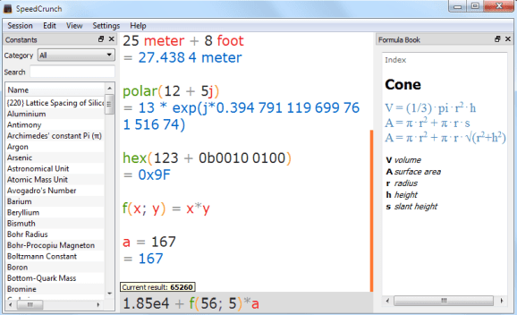
Chi volesse provare ad effettuare qualche calcolo usando le formule presentate in questa pagina, può sfruttare la calcolatrice scientifica SpeedCrunch, totalmente gratuita, in versione portable e con la localizzazione in italiano.
INDICE
Operazioni elementari e simbologia
In una scienza esatta come la matematica ci si aspetterebbe che tutto sia univocamente definito e che le espressioni si scrivano soltanto in un unico modo, ben preciso ed uguale per tutti. Potrà sembrare strano, ma così non è.
È pur vero che sarà impossibile che un matematico possa aver dubbi interpretativi nel leggere un'espressione scritta da un altro matematico, ma noi che matematici non siamo, abbiamo bisogno di definire in modo chiaro il significato della simbologia incontrata nel corso della lettura.
Operazione
Simbolo
Esempio
Somma
+
3 + 4, a + b
Sottrazione
-
3 - 4, a - b
Moltiplicazione
omesso o ·
3·4, a·b, 3x
Divisione
/
3 / 4, a / b, 3 / x
Potenza
nessuno
34, ab, 3x
La tabella riepiloga le principali operazioni che troveremo in questa pagina.
Si nota l'assenza del simbolo della crocetta per indicare la moltiplicazione, in quanto si confonderebbe con la lettera x, largamente usata nelle funzioni (come vedremo).
Le operazioni hanno precedenze diverse, ciò significa che non necessariamente debbano essere svolte nell'ordine in cui compaiono.
L'elevamento a potenza ha la precedenza su tutte le altre operazioni, la moltiplicazione e la divisione hanno la stessa precedenza e la hanno sulla somma e sottrazione che hanno uguale precedenza.
Ad esempio, l'espressione \( 2 + 3 \cdot 4 - 2^3 \) si svolge calcolando \(3 \cdot 4 = 12 \), si somma 2 ottenendo 14 e si sottrae 8 ottenendo 6. Se avessimo voluto calcolare 2 più 3 e moltiplicare il risultato per 4 avremmo dovuto scrivere \( (2 + 3) \cdot 4 - 2^3 = 12\). L'espressione \( 2 + 3 \; (4 - 2^3)\) (notare l'omissione del segno della moltiplicazione) indica che prima dobbiamo calcolare \(4 - 8=-4 \), poi moltiplichiamo per 3 e infine sommiamo 2, ottenendo -10.
Come ultimo esempio vediamo \( 2 + 3 (4 - 2)^3 \). Iniziamo con l'elevamento a potenza (che ha la precedenza su tutto) \((4-2)^3 = 8\), poi \(3 \cdot 8 = 24\) a cui sommiamo 2 ottenendo 26.
Quando dovremo scrivere le equazioni che descrivono la caduta di un motore del DC-9, faremo largo uso dei vettori.
In questa pagina, i vettori sono scritti con il carattere tondo (non corsivo) e in grassetto, ad esempio: \( \mathbf{F} = m \mathbf{a} \), in cui la forza e l'accelerazione sono due vettori, mentre la massa è uno scalare. Il modulo o magnitudine di un vettore è la lunghezza del vettore e si indica con \( \| \mathbf{v} \| \). I versori vengono indicati con \( \hat{\mathbf{v}} \).
Per conoscere il significato di eventuali altri simboli che potrebbero essere incontrati in questa pagina, si può consultare il lunghissimo elenco presente nella pagina "Glossario della simbologia matematica".
Funzioni
Una funzione è un'espressione matematica che "spiega" (con opportuna simbologia) come calcolare un valore partendo da una variabile che può assumere valori assegnati a piacere.
Un esempio di una funzione può essere: \(f(x)=2x\) (si legge: "effe di ics uguale a due ics"), con la quale vogliamo indicare che c'interessa calcolare il risultato della moltiplicazione per due di un numero qualunque (indicato con \(x\)). Sintassi alternative e totalmente equivalenti sono: \(y = 2x\) o \(y(x) = 2x\), in cui \(y\) viene chiamata variabile dipendente (perché il suo valore dipende da \(x\)) e \(x\) è la variabile indipendente.
La variabile \(x\) può rappresentare qualunque grandezza fisica (tempo, massa, quota, ecc.) in base al contesto. Ad esempio, si potrebbe scrivere: \( v(t) = 2 + 3t \) per rappresentare la velocità di un corpo in funzione del tempo \(t\).
\( \boldsymbol{t} \)
\( \boldsymbol{v} \)
0
2
1
5
2
8
3
11
4
14
4,5
15,5
La funzione sta ad indicare che inizialmente (\(t=0\)) il corpo sta viaggiando con una velocità di 2 m/s e accelera costantemente di 3 m/s ogni secondo che passa, ha, cioè, un'accelerazione di 3 m/s2, quindi dopo 4 s avrà una velocità pari a \( v(4) = 2 + 3 \cdot 4 = 14 \; m/s\).
Esplicitare il fatto che \(v\) è funzione di \(t\) usando \(v(t)\) è certamente superfluo, in questo caso, poiché non c'è alcuna possibilità di confondersi; basterebbe scrivere: \( v = 2 + 3t \), ma a volte è utile parametrizzare una funzione usando le lettere al posto dei numeri: \( f(x) = mx + n \), mantenendo l'equazione nella sua forma generica. In questo caso, scrivere \( f(x) = mx + n \) invece di \( y = mx + n \) rende inequivocabile il fatto che la variabile indipendente è \(x\) e non una delle altre due lettere. Siccome quella \(f(x)\) rappresenta l'equazione generica di una retta, nessuno avrebbe dubbi interpretativi, ma ciò potrebbe non essere vero nel caso di equazioni più complesse.
Quando sarà necessario effettuare qualche calcolo specifico su \(f(x)\), bisognerà sostituire \(m\) e \(n\) con gli opportuni valori che dipendono dal contesto. Ad esempio, se il problema consiste nel trovare una retta avente una pendenza di 30°, scriveremo: \( f(x) = \tan(30°) \cdot x + n \), quindi abbiamo fissato \( m= \tan(30°) \simeq 0,57735 \) (il simbolo \( \simeq \) si legge "circa uguale" o "uguale a circa").
Se oltre alla pendenza, imponiamo anche la condizione che la retta passi per il punto \( P(0, 3) \) (in cui la prima coordinata è sempre la \(x\), la seconda è sempre la \(y\) e la terza, se presente, è sempre la \(z\)), allora possiamo fissare anche \(n=3\): \( f(x) = \tan(30°) \cdot x + 3 \).
Se si vuole esprimere l'angolo in radianti anziché in gradi, basta tener presente la relazione: \(1 \; rad = \pi / 180° \simeq 57,3°\). Quindi avremo: \( f(x) = \tan(\frac{\pi} {6}) \cdot x + 3 \).
Derivata di una funzione
La derivata di una funzione ci dice quanto varia la funzione punto per punto e si indica con \( f'(x) \) ("effe primo di ics"). È usuale anche la notazione \( \text{d}y/ \text{d}x \) ("de ipsilon su de ics") per indicare la derivata di \(y\) in funzione di \(x\) o anche \( \dot y \).
Trovare la derivata di una funzione significa trovare l'equazione tramite la quale si può calcolare la variazione della funzione in un punto qualunque.
Dalla precedente tabella, si nota che la variazione di \(v\) è costante per qualunque \(t\) e tale variazione è pari a 3 m/s quando \(t\) varia di 1 s. La derivata, quindi, è pari a 3: \(v'(t) = 3\) (verifica) ed è, quindi, indipendente dal valore di \(t\).
Il concetto di derivata è importante nel nostro contesto perché è legato a ben note grandezze fisiche che descrivono il moto dei corpi. Ad esempio, la derivata della posizione è l'entità della variazione della posizione; se un corpo varia la sua posizione, significa che si sta muovendo, cioè esso è dotato di una certa velocità. Quindi, la variazione della posizione o la derivata della posizione è la velocità.
Se, a sua volta, anche la velocità varia, significa che il corpo sta accelerando (o decelerando). Quindi la variazione della velocità o la derivata della velocità è l'accelerazione.
Ciò può essere espresso scrivendo: \( v(t) = p'(t) \) e \( a(t) = v'(t) \); la velocità in funzione del tempo è pari alla variazione della posizione in funzione del tempo e l'accelerazione in funzione del tempo è pari alla variazione della velocità in funzione del tempo.
Siccome la derivata della posizione è la velocità e la derivata della velocità è l'accelerazione, ne consegue che l'accelerazione è la derivata seconda della posizione: \( a(t) = p''(t) \) o \( a = \ddot p \).
Per fare un esempio, se la posizione di un corpo è esprimibile con la funzione \( p(t) = 4t^2 + 3t + 2 \) (che è un polinomio di secondo grado, cioè una parabola), si può calcolare la posizione di detto corpo in un istante qualunque. Ad esempio, dopo 5 s il corpo si trova a \( p(5) = 4 \cdot 5^2 + 3 \cdot 5 + 2 = 117 \; m \) dall'origine.
Per calcolare la velocità di quel corpo in un istante qualunque è sufficiente calcolare la derivata di \( p(t) \). Wolfram Alpha dà: \( p'(t) = 8t+3 \), quindi la velocità del corpo dopo 5 s è \( v(5) = 8 \cdot 5 + 3 = 43 \; m/s \).
Derivando \( v(t) \) otteniamo l'accelerazione. Wolfram Alpha dà: \( v'(t) = 8 \), quindi l'accelerazione è costante per qualunque \(t\) e vale \( 8 \; m/s^2 \). Queste due derivate saranno verificate nel prossimo paragrafo.
Il grafico aiuta a visualizzare l'andamento dei parametri in funzione del tempo.
Muovendo il puntatore del mouse sopra al grafico, vengono mostrati i valori della posizione e della velocità in un dato istante.
Si nota che la velocità e la posizione non iniziano da \( 0 \) per \(t=0\), come in effetti risulta chiaro dalle formule.
Derivazione numerica
Nel precedente paragrafo abbiamo visto che per calcolare la derivata di una funzione bisogna prima trovare l'equazione che rappresenta la derivata della funzione e tramite questa equazione si calcola la derivata della funzione in un punto a piacere.
La derivazione numerica ci dispensa dalla fatica di applicare le regole di derivazione per trovare l'equazione che rappresenta la derivata di una funzione e ci permette di calcolare il valore della derivata in un punto qualunque disponendo solamente della funzione da derivare.
Iniziamo dal metodo più semplice possibile per verificare se \( p'(t) = 8t+3 \) è veramente la derivata di \( p(t) = 4t^2 + 3t + 2 \). Tenendo presente il concetto di derivata, verifichiamo se la variazione della posizione in un dato istante corrisponde alla velocità, cioè alla derivata di \(p(t)\).
Siccome abbiamo già calcolato \(p(5)\), calcoliamo un altro valore di \(p(t)\) per \(t\) molto vicino a 5 s; ad esempio \(p(5,1) = 121,34 \; m \). La variazione della posizione è, quindi, \(121,34 - 117 = 4,34 \; m \) in 0,1 s, da cui risulta una velocità di \( 4,34 / 0,1 = 43,4 \; m/s \) che è abbastanza vicino a 43 m/s calcolati con la formula della derivata \( p'(t) = 8t+3 \).
Riduciamo ancora l'intervallo di tempo: \(p(5,01) = 117,4304 \; m \), ottenendo una velocità di \( (117,4304 - 117) / 0,01 = 43,04 \; m/s \). Sembra proprio che il risultato stia convergendo verso i 43 m/s calcolati con \( p'(t) \).
Possiamo, dunque, affermare che \( 8t+3 \) è veramente la derivata di \(p(t)\).
L'accuratezza di questo metodo può essere migliorata (a scapito della velocità di calcolo) calcolando due valori di \(p(t)\) simmetrici rispetto a \(t\): \(p(t - \Delta t)\) e \(p(t + \Delta t)\), dove \(\Delta t\) ("delta t") è un tempo piccolo a piacere. La derivata sarà: \( p'(t) \simeq \frac{ p(t + \Delta t) - p(t - \Delta t) } { 2 \cdot \Delta t} \), che è una variante del metodo del rapporto incrementale (visto prima). Ponendo \( \Delta t = 0,1\), abbiamo: \( p'(5) \simeq (p(5,1) - p(4,9)) / 0,2 = 43 \; m/s \); in questo caso, il risultato è esatto, ma è una fortuna che capita molto raramente.
Per quanto semplici, i due procedimenti appena visti sono inefficienti ed instabili, ciò significa che non conviene usarli come normale prassi.
Un metodo di gran lunga più efficiente ed affidabile è quello dell'estrapolazione polinomiale col metodo di Ridders. Il testo è in lingua inglese, ma c'interessa solo il programma presente da pag. 3 del file (pag. 188 del libro).
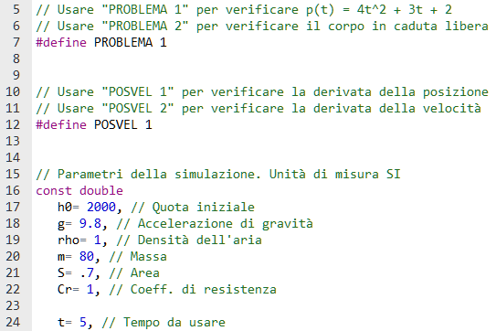
Il programma che consente di vedere all'opera gli ultimi due metodi nominati si trova a questo link.
I numerosi parametri che compaiono dalla riga 16 serviranno successivamente. La riga 24 può essere modificata per variare il tempo a piacere.
Il programma inizia ad essere eseguito sempre dalla funzione main() (riga 105) che a sua volta chiama varie volte la funzione PVA() (riga 36) alla quale gli viene passato il tempo per il quale effettuare i calcoli.
La logica di funzionamento del programma è semplice. Siccome è stata fissata (arbitrariamente, solo per fare un esempio) la legge che esprime la posizione di un ipotetico corpo in movimento in funzione del tempo (\( p(t) = 4t^2 + 3t + 2 \)) e abbiamo usato Wolfram Alpha per calcolare sia la derivata prima (velocità) che seconda (accelerazione) di \( p(t) \), tramite il programma vogliamo verificare che Wolfram Alpha non si sia sbagliato.
Per far questo, stabiliamo che la funzione da derivare è \( 4t^2 + 3t + 2 \) e usiamo il programma per calcolarne la derivata in alcuni punti a piacere tramite i due algoritmi prima citati. Poi usiamo la funzione dataci da Wolfram Alpha \( p'(t) = 8t+3 \) per calcolare il valore della derivata negli stessi punti di prima e confrontiamo i due risultati.
Una volta appurata la correttezza dell'equazione dataci da Wolfram Alpha, sappiamo che \( p'(t) = 8t+3 \) è veramente la derivata di \(p(t)\) e possiamo usare \(p'(t)\) per verificare se la sua derivata è veramente pari a 8, come calcolato da Wolfram Alpha.
Questa parte di codice effettua il calcolo della posizione, velocità ed accelerazione in funzione del tempo e assegna il valore della funzione alla variabile fun e il valore della sua derivata alla variabile der, in base al valore assegnato a POSVEL nella riga 12.
La derivata di fun calcolata dal programma usando i procedimenti numerici visti prima sarà considerata esatta per il tempo impostato nella riga 24, mentre il valore memorizzato in der (calcolato da Wolfram Alpha) sarà quello da verificare.
Se POSVEL vale 1, significa che vogliamo verificare la correttezza della derivata della posizione calcolata da Wolfram Alpha, quindi la funzione è p= 4*t*t + 3*t + 2 e la sua derivata (da verificare) è v= 8*t + 3. L'asterisco è l'operatore matematico della moltiplicazione.
Se POSVEL vale 2, vogliamo verificare la correttezza della derivata della velocità calcolata da Wolfram Alpha, quindi la funzione è v= 8*t + 3 e la sua derivata (da verificare) è a= 8.
Il programma, quindi, calcola la derivata della funzione tramite i due algoritmi nominati in precedenza e verifica se il risultato è uguale a quello calcolato tramite le formule ottenute da Wolfram Alpha.
Eseguendo il programma così com'è (cliccando su "Run"), verifichiamo la soluzione data da Wolfram Alpha per la derivata di \( p(t)\), cioè verifichiamo se \( p'(t) = 8t+3 \) è giusta.
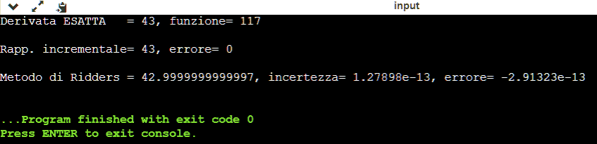
Possiamo appurare che la derivata di \(p(t)\) è veramente 43 e che \(p(5)\) vale 117, come già calcolato.
Il numero -2.91323e-13 equivale a -2,91323·10-13. Ad esempio, 1.2e-03 equivale a 0,0012.
Adesso dobbiamo verificare se la derivata di \(v(t)\) è veramente 8. Siccome è necessario apportare una piccola modifica al programma, bisogna premere "Fork this" (in alto a sinistra) per crearne una copia modificabile. Ora si può modificare la riga 12 in: #define POSVEL 2. Eseguendo il programma, otteniamo proprio 8.
Si possono verificare altri punti variando t alla riga 24. Abbiamo, comunque, già appurato che le equazioni date da Wolfram Alpha sono giuste.
Equazioni differenziali
Un'equazione differenziale è una funzione che lega una funzione da trovare alla sua derivata: \( y'(x) = f(x, y(x)) \), ad esempio: \(y'(x) = 2x + 3 \; y(x) + 4\), in cui la derivata della funzione \(y(x)\) dipende sia dalla variabile indipendente \(x\) che dalla funzione \(y(x)\) (da trovare).
Come abbiamo visto, nel caso della funzione il legame è tra due numeri (genericamente indicati con \(x\) e \(y\)), il che equivale a dire: fissa \(x\) e calcola il numero \(y\) (fisso, ad esempio, \(x=3\) e calcolo \(2 \cdot 3=6\)).
Nel caso delle equazioni differenziali (e anche delle derivate), invece, ciò che interessa trovare non è un numero ma un'intera funzione, cioè \( y(x) \). Questa operazione viene detta integrazione ed è l'inverso della derivazione.
Per capire cosa significa in pratica risolvere un'equazione differenziale, facciamo qualche esempio partendo da uno banalissimo. Sfruttiamo la formula vista prima: \( v(t) = 2 + 3t \) che sappiamo già rappresentare un corpo che accelera di 3 m/s2 partendo da una velocità iniziale pari a 2 m/s.
L'equazione differenziale è: \( v'(t) = 3 \; m/s^2, v(0) = 2 \; m/s \). Chiediamo l'aiuto a Wolfram Alpha per farci trovare la soluzione che, come detto, consiste nel trovare \(v(t)\), cioè una funzione che ha come derivata 3 e che inizialmente (per \(t=0\)) vale 2: \( y(x)=3x+2 \), dove la variabile indipendente \(x\), per noi è il tempo \(t\) e la variabile dipendente \( y(x) \), per noi è la velocità \( v(t) \); il risultato è proprio quello che già conoscevamo, cioè la funzione che dà come derivata 3 partendo dal valore iniziale 2 è proprio \( y(x)=3x+2 \) che, nel nostro caso, scriviamo (in modo assolutamente equivalente) come: \( v(t) = 3t + 2\).
Ciò che abbiamo fatto è che dalla conoscenza dell'accelerazione (la derivata della velocità) e dal valore iniziale della velocità, siamo stati in grado, grazie ad un'equazione differenziale, di trovare la legge che descrive il moto del corpo.
Nell'esempio appena visto, la derivata è semplicemente una costante. Vediamo, allora, un esempio leggermente meno banale, sempre relativo al moto uniformemente accelerato.
Partendo dalla solita formula \( v(t) = 2 + 3t \), invece di trovare la formula per l'accelerazione, adesso vogliamo trovare la formula che esprime la posizione del corpo in funzione del tempo.
Sapendo che la derivata della posizione è la velocità, impostiamo l'equazione differenziale: \( p'(t) = 2 + 3t, p(0) = 1 \), così scrivendo, indichiamo che inizialmente il corpo ha già percorso 1 m e vogliamo trovare la funzione \( p(t) \), cioè una formula che lega la posizione al tempo. Wolfram Alpha ci dà la soluzione: \( y(t)=3t^2/2+2t+1 \).
Siccome abbiamo già appurato che l'equazione \( v(t) = 2 + 3t \) rappresenta un corpo che possiede una velocità iniziale \(v_0 = 2 \; m/s \) e accelera con un'accelerazione \(a = 3 \; m/s^2 \) e siccome abbiamo anche imposto la condizione iniziale che il corpo si trova nella posizione \(p_0 = 1 \; m\), il risultato può essere riscritto nella forma generica più usuale: \( p(t) = \frac{1}{2}at^2 + v_0 t + p_0 \).
Scorrendo la pagina "Moto rettilineo uniformemente accelerato", troviamo proprio la formula ottenuta come risultato dell'equazione differenziale. Siamo, quindi, partiti da una formula che descrive la velocità di un corpo in funzione del tempo e, grazie all'utilizzo delle equazioni differenziali, siamo arrivati a trovare la formula che descrive la posizione dello stesso corpo in funzione del tempo.
Le equazioni differenziali viste fino ad ora erano della forma \( y'(x) = f(x) \), cioè la derivata di \(y(x)\) varia solo in funzione della variabile indipendente \(x\) e non di quella dipendente \(y\) o \(y(x)\). Come ultimo esempio, vediamone uno della forma \( y'(x) = f(x, y(x)) \): \( y' = 2x + 3y \) (forma "abbreviata" di \( y'(x) = 2x + 3 \; y(x) \)).
Per restare nel mondo della fisica, l'equazione potrebbe rappresentare il moto di un corpo dotato di un motore che lo fa accelerare di 2 m/s2 (\(2x\)) e che si muove su di una superficie il cui attrito diminuisce progressivamente allontanandosi dalla partenza e grazie a tale riduzione il corpo accelera di 3 m/s ogni metro percorso (\(3y\)). In tal caso, l'equazione si scriverebbe: \( v(t) = 2t + 3 \; p(t) \) o \( p'(t) = 2t + 3 \; p(t) \).
La soluzione data da Wolfram Alpha è: \( y = c_1 \text{e}^{3x} - \frac{2}{3} x - \frac{2}{9} \), dove \(c_1\) è un numero qualunque; variandolo a piacere l'equazione differenziale sarà sempre soddisfatta. Adesso troviamo la derivata del risultato ottenuto: \( y' = 3 c_1 \text{e}^{3x} - \frac{2}{3} \).
Siccome l'equazione differenziale è: \( y' = 2x + 3y \), verifichiamo che \( y' = 3 c_1 \text{e}^{3x} - \frac{2}{3} = 2x + 3( c_1 \text{e}^{3x} - \frac{2}{3} x - \frac{2}{9}) \)
, cioè sostituiamo a \(y'\) la derivata appena calcolata e a \(y\) la soluzione dell'equazione differenziale. Otteniamo:
\( \require{cancel} 3 c_1 \text{e}^{3x} - \frac{2}{3} = \cancel{2x} + 3 c_1 \text{e}^{3x} \cancel{- \; 2x} - \frac{2}{3} \), \(2x\) si annulla con \(-2x\), quindi il primo e il secondo membro sono identici e l'eguaglianza è soddisfatta. Con ciò abbiamo verificato che \( y = c_1 \text{e}^{3x} - \frac{2}{3} x - \frac{2}{9} \) è la soluzione dell'equazione differenziale \( y' = 2x + 3y \).
Scegliere un valore per \(c_1\):
Corpo in caduta libera
Passando all'argomento che c'interessa direttamente, definiamo l'equazione differenziale che descrive il moto di un corpo in caduta libera in presenza di aria.
Un corpo che si muove nell'aria è soggetto alla resistenza aerodinamica data da \( F_a = \frac{1}{2} \rho v^2 S C_r \) (qui indicata come una generica forza \(F_a\), con il pedice \(a\) per evidenziare che è dovuta all'aria). La densità dell'aria \( \rho \) è variabile, ma per semplificare i calcoli bisogna considerarla costante. Raggruppando tutti i termini costanti in un'unica lettera (per praticità), abbiamo \( k = \frac{1}{2} \rho S C_r \), da cui \( F_a = k v^2 \).
Un corpo in caduta libera è anche soggetto alla forza gravitazionale esercitata dalla Terra.
In base al secondo principio della dinamica, la forza è uguale alla massa del corpo per l'accelerazione; nel caso dell'accelerazione di gravità, possiamo scrivere: \( F_g = mg \). L'accelerazione di gravità \(g\) varia con la posizione, ma per semplificare i calcoli bisogna considerarla costante.
Se si volesse affrontare il problema in modo rigoroso, bisognerebbe considerare anche la forza di Archimede. Dal momento che il corpo è immerso nell'aria, esso riceve una spinta verso l'alto (contraria alla forza di gravità) pari al peso dell'aria spostata. Tuttavia, data la bassa densità dell'aria, tale forza è trascurabile rispetto a \(F_g\) e lo diventa anche rispetto ad \(F_a\), una volta che il corpo acquista velocità.
La forza complessiva a cui è soggetto il corpo in caduta è quindi \( F = F_g - F_a \).
L'equazione differenziale che c'interessa è quindi: \( ma = mg - k v^2 \), che può essere meglio esplicitata tenendo presente che l'accelerazione \(a\) è la derivata della velocità: \( mv' = mg - k v^2 \), da cui risulta chiaro che abbiamo una derivata (\(v'\)) e la sua funzione: \( v'(t) = f(v(t)) = (mg - k \cdot v(t)^2)/m \). Si può notare che \( v'(t) \) non è della forma \( v'(t) = f(t, v(t)) \), ma dipende solo dalla velocità e non dal tempo.
Dando in pasto l'equazione differenziale a Wolfram Alpha otteniamo un risultato che può essere riscritto in modo più organico come:
$$v(t)= \sqrt{ \frac{gm}{k} } \tanh \left( t \sqrt{ \frac{gk}{m} } \right) $$
Adesso che abbiamo la derivata della posizione (cioè la velocità), la possiamo integrare per ottenere la posizione \( p(t) \). Wolfram Alpha dà:
$$p(t)= \frac { \sqrt{ \frac{gm}{k} } \log \left( \cosh \left( t \sqrt{ \frac{gk}{m} } \right) \right) } { \sqrt{ \frac{gk}{m} } } \; = \;
\frac{m}{k} \log \left( \cosh \left( t \sqrt{ \frac{gk}{m} } \right) \right)
$$
Le due formule rappresentano le leggi matematiche che consentono di descrivere il moto di un corpo in caduta libera avente il coefficiente di resistenza costante e che avviene in un fluido avente densità costante, in presenza di un campo gravitazionale invariabile e in assenza della spinta d'Archimede.
Anche in questo caso possiamo verificare le due complicate equazioni tramite il programma usato prima per verificare la correttezza delle derivate. L'equazione di partenza è \( v'(t) = (mg - k \cdot v(t)^2)/m \), quindi dobbiamo verificare le due equazioni \(v(t)\) e \(p(t)\) ottenute da Wolfram Alpha.
Riprendiamo il programma già visto e, dopo aver premuto "Fork this", impostiamo #define PROBLEMA 2 e #define POSVEL 2. Conviene partire da POSVEL = 2 perché \(p(t)\) è stata ottenuta integrando \(v(t)\), a sua volta ottenuta integrando \(v'(t)\), unica equazione certamente esatta. Quindi, prima verifichiamo la correttezza di \(v(t)\); una volta accertata la sua correttezza, verifichiamo la correttezza di \(p(t)\).
Premiamo "Run". Facendo varie prove, modificando tutti i vari parametri, possiamo solo rilevare microscopiche differenze tra i risultati delle funzioni ottenute da Wolfram Alpha e quelli ottenuti col metodo di Ridders. Quindi \(v(t)\) è senz'altro giusta; passiamo a \(p(t)\).
Modifichiamo la riga 12 in #define POSVEL 1 e facciamo qualche altra prova di calcolo. Anche in questo caso le differenze riscontrabili sono insignificanti, per cui è giusta anche \(p(t)\).
Se si desidera calcolare la velocità direttamente in funzione della posizione (anziché del tempo), è sufficiente sostituire l'accelerazione \(a\) presente nell'equazione differenziale \( ma = mg - k v^2 \) con un'equazione che esprima l'accelerazione in funzione della posizione. Siccome \( a = v / t \), \( t = v / a = \Delta p / \Delta v\), cioè il tempo è uguale alla variazione della posizione in rapporto alla variazione della velocità. Sostituendo \( \Delta \) con \(\text{d}\) per indicare variazioni infinitesime di \(p\) e di \(v\), si può scrivere \( a = v / (\text{d}p / \text{d}v) = v \cdot \text{d}v/\text{d}p \). Quindi l'equazione differenziale diventa: \( mv \cdot \frac{\text{d}v}{\text{d}p} = mg - k v^2 \), in cui tutte le \(v\) sono funzione di \(p\), come chiaramente indicato da \(\text{d}v/\text{d}p\). Usando questa notazione, l'equazione differenziale originaria può essere scritta (per fare un confronto) come \( m \frac{\text{d}v}{\text{d}t} = mg - k v^2 \).
Sistemando il risultato dato da Wolfram Alpha, otteniamo:
$$ v(p) = \sqrt{ \frac{gm}{k} (1 - \text{e}^{-2kp/m} )} $$
che consente di calcolare la velocità di caduta in corrispondenza di una quota \(p\) scelta a piacere.
Riprendendo l'equazione per il calcolo di \(v(t)\), intuitivamente appare chiaro che la velocità aumenta rapidamente all'inizio della caduta e aumenta sempre più lentamente col passar del tempo, in quanto la resistenza aerodinamica (che frena il corpo) aumenta continuamente in ragione del quadrato della velocità. È intuibile, quindi, che se il corpo inizia a cadere da una quota sufficientemente alta, arriverà ad un punto in cui la velocità non aumenta più in modo significativo, tanto da poterla considerare costante; tale velocità viene chiamata velocità terminale o velocità limite ed è calcolabile attraverso l'utilizzo dell'operazione matematica chiamata limite.
Osservando \( v(t) \), si nota bene che essa varia in funzione di \(t\) attraverso la funzione chiamata tangente iperbolica, il cui grafico mostra che all'aumentare dell'argomento (quello racchiuso tra le due parentesi tonde di \( \tanh() \)) la funzione si avvicina sempre di più a 1. Quindi, col passar del tempo, cioè all'aumentare di \(t\), il valore di \( \tanh ( t \sqrt{ gk / m } ) \) sarà sempre più vicino a 1, arrivando al punto che per \(t\) sufficientemente grande, quel valore sarà praticamente uguale a 1 (sarà 0,99999...). L'espressione si può, dunque, scrivere: \( v(\infty)= \sqrt{ gm /k } \cdot 1 \). Il simbolo \( \infty \) significa "infinito", cioè \( v(\infty) \) indica la velocità raggiunta dopo un tempo infinito o, più realisticamente, molto grande.
Siccome, per praticità, avevamo posto \( k = \frac{1}{2} \rho S C_r \), la formula per la velocità limite è:
$$v(\infty) = V_l= \sqrt{ \frac{gm}{\frac{1}{2} \rho S C_r} } \; = \; \sqrt{ \frac{2gm}{\rho S C_r} }.$$
In modo del tutto analogo si può ottenere \(V_l\) dall'equazione per \(v(p)\) considerando che l'esponenziale tende a \(0\) per \(p\) che tende ad infinito.
Può essere utile, infine, calcolare il tempo impiegato dal corpo per arrivare al suolo. Questo tempo lo si può ottenere dall'equazione \(p(t)\) isolando la variabile indipendente \(t\). Fissiamo \(p(0) = h_0\), dove \( h_0 \) è la quota dalla quale il corpo inizia la caduta.
I vari passaggi per isolare \(t\) sono:
$$h_0 \frac { k } { m } = \log \left( \cosh \left( t \sqrt{ \frac{gk}{m} } \right) \right) \;,\;
\text{e}^{h_0 \frac { k } { m } } = \cosh \left( t \sqrt{ \frac{gk}{m} } \right) \;,\;
\text{arccosh} \left( \text{e}^{h_0 \frac { k } { m } } \right) = t \sqrt{ \frac{gk}{m} } \;,\;
t = \text{arccosh} \left( \text{e}^{h_0 \frac { k } { m } } \right) / \sqrt{ \frac{gk}{m} }.
$$
Qui si può fare qualche sperimentazione variando alcuni parametri che compaiono nelle formule.
Corpo in caduta: → coeff. balistico = kg/m2
Quota iniziale: m
Densità aria: kg/m3
S = m2, Cr = , m = kg, velocità limite = .
Tempo impiegato per arrivare al suolo = s.
La linea arancione tratteggiata rappresenta la velocità limite.
Si può appurare che un corpo avente un coefficiente balistico \( CB = m / (C_r \cdot S) \) piccolo viene molto frenato dall'aria e tende a raggiungere rapidamente la velocità limite, mentre un corpo "massiccio" (con \(CB\) grande) risente molto meno della resistenza dell'aria. Ciò si spiega banalmente con il secondo principio della dinamica. Infatti, esprimendo la massa del corpo in funzione di \(CB\), abbiamo: \( m = CB \cdot C_r \cdot S \), da cui \( a = F_a / m = F_a / (CB \cdot C_r \cdot S) \), risultando chiaro che l'accelerazione \(a\) dovuta alla forza aerodinamica \(F_a\) è inversamente proporzionale a \(CB\), quindi, al crescere di \(CB\), l'aria frena sempre di meno il corpo.
I calcoli possono essere agevolmente svolti anche con la calcolatrice SpeedCrunch.
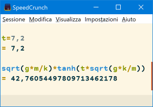
Per la caduta di una persona, inserire le seguenti righe, premendo "Invio ↵" al termine di ogni riga (per copiarle si può usare copia&incolla):
I numeri possono anche essere scritti direttamente nella formula, non è obbligatorio assegnare le variabili, ma per la costante k è sicuramente più comodo farlo.
Se si desidera effettuare altri calcoli, è sufficiente riassegnare le variabili da modificare e premere la freccia in alto della tastiera "🠥" fino a quando non ricompare la formula sqrt(g*m/k)*tanh(t*sqrt(g*k/m)).
Si procederà allo stesso modo per \(p(t)\) (le variabili sono già state assegnate, per cui basterà solo scrivere la formula).
Per \(v(p)\), si può inserire la formula sqrt(g*m/k*(1-exp(-2*k*2000/m))), dove "2000" è la quota di partenza (modificabile a piacere, purché positiva).
Integrazione numerica
Le equazioni trovate nel precedente paragrafo potrebbero essere utili in molti campi della fisica, ma sono inutilizzabili per simulare la caduta di un frammento del DC-9, principalmente perché la densità dell'aria non può essere considerata costante.
Si potrebbe decidere di sostituire \( \rho \) presente nelle formule (inglobata nella costante \(k\)) con la sua equazione che la lega alla quota, ma non è detto che esista una soluzione per un'equazione differenziale che diventerebbe piuttosto complessa.
In questi casi si ricorre, molto opportunamente, all'integrazione numerica. Ciò significa risolvere l'equazione differenziale tramite algoritmi generici, validi per qualunque tipo di problema, a prescindere dalla complessità dell'equazione differenziale.
Iniziamo con un esempio pratico che sfrutta le due complicate equazioni \(p(t)\) e \(v(t)\) ottenute analiticamente.
Il codice sorgente che consente di risolvere numericamente (cioè tramite un algoritmo generico) le due equazioni differenziali \( mv' = mg - k v^2 \) e \( p' = v \) si trova a questo link.
Per eseguire il programma basta cliccare sul pulsante verde "Run". Dopo qualche istante, il programma parte e genera alcune righe che mostrano il velocissimo progredire del processo d'integrazione delle due equazioni differenziali.
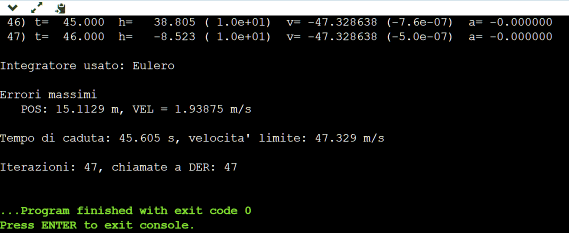
Le righe mostrano:
il numero sequenziale del passo d'integrazione;
t: tempo dall'inizio della simulazione;
h: quota ed errore rispetto al valore esatto calcolato con \(p(t)\);
v: velocità di caduta ed errore rispetto al valore esatto calcolato con \(v(t)\);
a: accelerazione a cui è soggetto il corpo.
Gli errori vengono mostrati in un formato compatto; ad esempio, 1.3e+01 significa 1,3 · 101 che è uguale a 13. Allo stesso modo, -1.9e-03 significa -1,9 · 10-3 che è uguale a -0,0019.
Gli errori ci sono perché l'integrazione numerica è un metodo generico che approssima la soluzione analitica, che, invece, è esatta perché ottenuta tramite un procedimento matematico specifico per quella particolare equazione differenziale. L'integrazione numerica, quindi, darà sempre un risultato diverso da quello esatto, ma l'errore può essere ridotto a piacimento agendo in due modi (come vedremo tra poco).
Al termine dell'esecuzione, vengono mostrate alcune informazioni:
il tipo d'integratore usato (tra breve ne vedremo il significato);
gli errori massimi commessi dall'integratore sulla posizione e sulla velocità;
il tempo di caduta e la velocità limite, entrambi calcolati con le formule viste prima;
il numero di iterazioni e il numero di volte che è stata chiamata la funzione per il calcolo delle derivate (normalmente questa funzione richiede la maggior parte del tempo di esecuzione del programma).
Passiamo a vedere velocemente le parti fondamentali del programma.
C'è una parte iniziale in cui vengono definiti tutti i parametri della simulazione; questa è l'unica parte che può essere modificata con i parametri da sperimentare, tutto il resto del programma andrebbe lasciato così com'è.
Il cuore del programma è rappresentato dalla funzione che calcola le derivate.
Questa parte di codice mostra la funzione DER() che contiene le due equazioni differenziali da integrare (cioè da risolvere).
Ciò che viene scritto dopo la doppia barra "//" (come "// Calcolo delle derivate") è un commento che il programmatore aggiunge per chiarezza e che viene completamente ignorato dal computer.
L'oggetto STS si chiama struttura ed è utile per contenere la posizione e la velocità in un'unica variabile (composta da p e da v).
Si nota che alla funzione DER gli viene passato lo stato st del corpo in caduta (cioè la posizione e la velocità). La funzione calcola le derivate e le restituisce (return der) all'interno della struttura der.
Quando, ad esempio, devo conoscere la velocità del corpo, scrivo st.v e quando devo assegnare la derivata della velocità, scrivo il valore in der.v.
Adesso ci vuole un integratore che faccia avanzare lo stato del corpo dalla sua condizione iniziale (quota e velocità fissate a piacere) fino all'istante voluto, per esempio fino a terra. Cioè l'integratore deve propagare lo stato risolvendo le due equazioni differenziali utilizzando il valore delle rispettive derivate.
L'integratore più banale e intuitivo in assoluto è l'integratore di Eulero.
Esso si basa sul fatto che se conosco l'accelerazione \(a\) a cui è soggetto il corpo in caduta in un dato istante, posso calcolare la variazione di velocità \( \Delta v\) dopo un certo lasso di tempo \(\Delta t\) tramite la semplice relazione \( \Delta v = a \cdot \Delta t \). Ad esempio, se il corpo, in un dato istante sta cadendo con \(v = 10 \; m/s\) ed è soggetto ad un'accelerazione \( a= 9 \; m/s^2 \), dopo 0,5 s la velocità sarà incrementata di \( \Delta v = 9 \cdot 0,5 = 4,5 \; m/s \), quindi la velocità dopo \( \Delta t = 0,5 \; s\) sarà \( v + \Delta v = 10 + 4,5 = 14,5 \; m/s\).
Conoscendo \(v = 10 \; m/s\), possiamo calcolare la variazione di posizione (o lo spazio percorso) sempre nel tempo \(\Delta t\) tramite la formula \( \Delta p = v \cdot \Delta t = 10 \cdot 0,5 = 5 \; m \).
Quindi, integrando contemporaneamente la posizione e la velocità abbiamo:
$$\begin{cases}
p(t + \Delta t) = p(t) + p'(t) \cdot \Delta t = p(t) + v(t) \cdot \Delta t \\
\\
v(t + \Delta t) = v(t) + v'(t) \cdot \Delta t = v(t) + a(t) \cdot \Delta t
\end{cases}
$$
dove \( \Delta t \) è il passo d'integrazione, \( p(t + \Delta t) \) e \( v(t + \Delta t) \) sono le soluzioni delle due equazioni differenziali dopo \( t + \Delta t \) secondi dall'inizio della caduta.
Per far capire al computer quelle due equazioni, si scrive:
st.p = st.p + dt * der.p
st.v = st.v + dt * der.v
in cui l'asterisco indica la moltiplicazione e (ormai dovrebbe essere chiaro) der.p è la derivata della posizione (\(v\) all'istante \(t\) o \(v(t)\)) e der.v è la derivata della velocità (\(a\) all'istante \(t\) o \(a(t)\)). Le due righe incrementano st.p e st.v della quantità dt · der.p e dt · der.v, rispettivamente.
Nel programma, quelle due espressioni possono essere scritte nella forma "compatta" st = st + dt * der grazie al codice presente dalla riga 35 alla 44 del programma.
I calcoli devono essere iterati fino a quando non si arriva alla condizione voluta, ad esempio fino a quando il corpo non arriva al suolo.
Il grafico mostra la quota e la velocità del corpo in funzione del tempo. Il tratto continuo è usato per i valori calcolati tramite l'integrazione, mentre il tratteggio è usato per i valori calcolati analiticamente (tramite le formule esatte).
È possibile scegliere il tipo d'integratore: (per "RK-2" v. più avanti) e
il passo d'integrazione: s.
Muovendo il puntatore del mouse sul grafico, possiamo leggere i valori dei vari parametri, mentre cliccando su "Edit chart" (in basso a destra) viene aperta una pagina in cui tali valori vengono mostrati anche in forma tabulare.
Applichiamo le due formule viste prima per capire come funziona l'integratore di Eulero con \( \Delta t = 1 \; s\). Consideriamo solo la posizione, perché per la velocità il procedimento è identico.
Il processo d'integrazione inizia con \(t=0\), \(p(0)= 2000 \; m\) e \(v(0) = 0\).
Al primo passo d'integrazione, dunque, \(t=0\), da cui: \(p(0 + \Delta t)= p(0) + v(0) \cdot \Delta t \; \Rightarrow \; p(1) = 2000 + 0 \cdot 1 = 2000 \; m\). In modo analogo otteniamo \(v(1) = -9,8 \; m/s\) (come si legge dal grafico). Siamo partiti dallo stato del corpo (posizione e velocità) all'istante \(t=0\) e l'integratore ha fatto avanzare lo stato di un tempo pari a \(\Delta t\).
Al secondo passo, \(t=1 \; s\), da cui: \(p(1 + \Delta t)= p(1) + v(1) \cdot \Delta t \; \Rightarrow \; p(2) = 2000 - 9,8 \cdot 1 = 1990,2 \; m\). Quindi, un'ulteriore applicazione dell'integratore ha fatto avanzare lo stato di un altro passo d'integrazione (\( \Delta t\)).
Si continua sempre in questo modo fino a quando non si verifica la condizione voluta.
Si nota che procedendo con l'integrazione, l'errore tende ad aumentare all'aumentare del tempo.
Adesso che dovrebbe essere tutto chiaro, possiamo iniziare a prendere in considerazione l'errore commesso dal programma nel calcolare il risultato delle due equazioni differenziali.
Gli errori massimi sono circa 15,1 m e 1,94 m/s. È forse utile aprire una breve parentesi per sottolineare che nei casi reali gli errori non possono essere calcolati in alcun modo (tutt'al più possono essere stimati), poiché se uno decide di usare l'integrazione numerica per risolvere un'equazione differenziale è ovvio che non ne conosce la soluzione analitica, altrimenti userebbe quella.
Se gli errori sono accettabili o inaccettabili lo decide il contesto; decidiamo che per noi sono inaccettabili.
Il modo più semplice per ridurre gli errori è ridurre il passo d'integrazione. Clicchiamo, allora, sul pulsante "Fork this" per creare una copia modificabile del programma e nella riga 15 riduciamo dt da 1 s a 0,1 s: dt= .1; // Passo d'integrazione.
Premendo "Run", notiamo che gli errori si sono notevolmente ridotti: 1,4 m e 0,18 m/s, ma il programma ha richiesto un tempo d'esecuzione circa 10 volte più lungo. Possiamo continuare a ridurre il passo d'integrazione, ma il tempo d'esecuzione sarà sempre maggiore e gli errori d'arrotondamento (dovuti al fatto che l'aritmetica del computer ha un numero finito di cifre) aumenteranno fino a diventare significativi.
Un modo più efficiente per ridurre gli errori è aumentare l'ordine dell'integratore, cioè usarne uno che esegue calcoli intermedi all'interno dello stesso passo d'integrazione, dando una soluzione più accurata.
Per fare una prova, ripristiniamo il dt originale: dt= 1; // Passo d'integrazione e modifichiamo la riga 24 in: #define TIPO_INTEGRATORE 3. Così facendo diciamo al programma di attivare il codice che esegue i calcoli usando l'integratore Runge-Kutta del 2° ordine (normalmente indicato con "RK-2").
Eseguito il programma, notiamo un notevole miglioramento rispetto all'integratore di Eulero; gli errori si sono ridotti a 1,1 m e 0,15 m/s e sono inferiori agli errori commessi dall'integratore di Eulero con un passo 1/10 più piccolo. Con un integratore solo appena più complesso, abbiamo ottenuto un risultato notevolmente migliore.
Anche con RK-2, riducendo il passo d'integrazione si riduce l'errore, ma l'errore decresce molto più rapidamente che non con l'integratore di Eulero.
Incrementiamo ulteriormente l'ordine dell'integratore passando ad un Runge-Kutta del 4° ordine (normalmente indicato con "RK-4").
Per usare questo integratore, la riga 24 del programma va modificata in: #define TIPO_INTEGRATORE 4.
Una volta eseguito il programma, notiamo la riduzione veramente significativa degli errori: 0,005 m e 0,0016 m/s. Riducendo il passo d'integrazione a 0,1 s, gli errori diventano praticamente microscopici. Questo tipo d'integratore, in effetti, viene considerato il minimo da prendere in considerazione per la risoluzione dei problemi reali.
Per concludere questa breve carrellata sugli integratori, vale la pena accennare all'esistenza di integratori che forniscono una stima dell'errore e grazie a questa stima, il programmatore può aggiungere il codice per variare automaticamente il passo d'integrazione durante il processo d'integrazione; all'aumentare dell'errore stimato, bisognerà ridurre il passo e viceversa.
Un esempio è il metodo Fehlberg 4(5) che sfrutta un integratore Runge-Kutta a 6 stadi con la soluzione al 4° ordine (come per RK-4) e la stima dell'errore ottenuta da un Runge-Kutta al 5° ordine; in pratica sono due integratori inglobati in uno, con la differenza che l'integratore è composto da soli 6 stadi, invece di 9 o 10 (o anche più) stadi totali che si avrebbero nel caso di due integratori diversi.
Il codice per risolvere le solite due equazioni differenziali si trova qui.
Tra i parametri della simulazione, compaiono anche la "tolleranza" e il passo d'integrazione iniziale (righe 13 e 14). Il programma inizia ad usare il passo iniziale e in base alla stima dell'errore calcola il nuovo passo da usare in funzione della tolleranza; riducendola, si riduce il passo e, di conseguenza, l'errore.
Avviando il programma, notiamo che inizialmente il passo è 1 s e viene mantenuto intorno a quel valore fino a quando l'integratore non si "accorge" che l'accelerazione diminuisce sempre di più. Il passo, quindi, diventa sempre più grande, perché il moto sta diventando, oltre che rettilineo, anche uniforme, tanto che all'approssimarsi della velocità limite, il passo diventa molto grande.
Il fatto di far progredire rapidamente la simulazione ha lo svantaggio di non permetterci di conoscere l'istante esatto in cui il corpo arriva al suolo. Vediamo, infatti, che l'ultima quota prima dell'impatto è 211 m e la prima dopo dell'impatto è -112 m; questi due istanti sono separati da quasi 7 s.
Nel caso specifico simulato sarebbe semplice determinare con sufficiente precisione il momento dell'impatto, perché (come detto) nella fase terminale il corpo non accelera più, ma se l'accelerazione fosse ancora significativa e variabile, il calcolo diventerebbe troppo grossolano.
Le strade percorribili sono due: usare un integratore che offre la cosiddetta "uscita densa" o continua oppure ridurre il passo d'integrazione, magari riducendo anche l'ordine dell'integratore.
La prima strada viene seguita in molti casi reali, usando integratori enormemente più complessi di quelli qui presentati. Uno di essi è l'usatissimo Dormand & Prince dell'8° ordine, con passo automatico e uscita densa, il cui codice (nell'arcaico linguaggio fortran) può essere scorso qui.
Per la simulazione di un corpo in caduta libera, invece, è sicuramente da preferire la seconda strada. Ad esempio, un RK-2 con passo di 0,1 s o 0,01 s soddisfa ampiamente i nostri requisiti.
Per fare un paragone, la simulazione del missile presentata nella pagina "Abbattimento tramite missili inerti", date le notevoli accelerazioni e variazioni dell'accelerazione in gioco, ha bisogno di un RK-4 con un passo d'integrazione di 1 ms.
Una particolarità che può tornare utile è che qualunque integratore può essere usato anche per andare indietro nel tempo; è sufficiente che il passo d'integrazione sia negativo.
Vediamo un esempio usando il primo programma visto: link. Premiamo "Fork this" per creare una copia modificabile del programma e selezioniamo direttamente l'RK-4, così riduciamo al minimo gli errori; riga 24: #define TIPO_INTEGRATORE 4.
Eseguito il programma con "Run", vediamo che l'ultimo tempo prima dell'impatto è 45 s. Annotiamo gli errori per quella riga: 4,9 · 10-3 m (4,9 mm) e 4,4 · 10-9 m/s (veramente microscopico).
Calcoliamo tramite le formule i valori esatti, con tutt'e 15 le cifre significative del computer, della quota e della velocità dopo 45 s: 28,6449175114053 m e -47,3286375013243 m/s.
Copiamo quei valori nello spazio vuoto della riga 76 del programma, assegnandoli allo stato iniziale del corpo: st.p= 28.6449175114053; st.v= -47.3286375013243;. Le due assegnazioni si possono copiare da questa pagina tenendo premuto il tasto sinistro del mouse mentre si selezionano quelle istruzioni, poi premere il tasto destro del mouse e cliccare su "Copy" o "Copia". Cliccare nella riga 76, poi premere il tasto destro del mouse e cliccare su "Paste" o "Incolla".
Cambiamo di segno al passo d'integrazione; riga 15: dt= -1; // Passo d'integrazione e clicchiamo "Run" per eseguire il programma.
Gli errori tra parentesi e quelli mostrati alla fine sono privi di senso, in quanto il tempo va all'indietro e si parte con una velocità diversa da zero.
Scorriamo le righe prodotte dal programma fino ad arrivare a -45 s: 46) t= -45.000 h= 2000.327 ( 2.0e+03) v= -0.068764 (-4.7e+01) a= -9.799979
i valori esatti li conosciamo già: h= 2000 m, v= 0 e a= -9,8 m/s2. Gli errori dell'integrazione all'indietro, in questo caso, sono nettamente superiori rispetto a quelli dell'integrazione in avanti. Riducendo il passo a mezzo secondo o a 1/10 s, gli errori si riducono notevolmente.
Questa prova dell'integrazione all'indietro è anche utile per evidenziare che nei casi reali (dove non si può calcolare il risultato esatto delle equazioni differenziali) non si può stabilire a priori l'errore che sarà commesso dall'integratore e abbiamo appurato che l'errore è molto variabile addirittura cambiando soltanto il verso dell'integrazione.
Un metodo semi-empirico, ma molto efficace per stimare l'errore commesso dall'integratore, consiste nell'iniziare con un passo ragionevole (in base al tempo d'esecuzione del programma) per poi dimezzarlo o decimarlo ad ogni esecuzione del programma fino a quando la differenza tra due risultati consecutivi non scende al di sotto di un valore accettabile (stabilito dal problema).
Il caso reale
Arriviamo finalmente alla simulazione del caso reale di un motore del DC-9 che cade in un ambiente realistico, in cui variano sia i parametri ambientali che il coefficiente di resistenza del motore.
La complessità matematica del fenomeno da simulare rende impossibile l'utilizzo di soluzioni analitiche, quindi l'unica via percorribile è quella dell'integrazione numerica delle equazioni differenziali che dovremo definire.
Questa simulazione differisce notevolmente da quella vista per il corpo in caduta libera, in quanto:
il motore è dotato di una velocità orizzontale;
il moto avviene in uno spazio tridimensionale;
oltre alle forze viste prima, è presente un vento variabile che aggiunge un'ulteriore accelerazione;
la densità dell'aria (ottenuta da valori misurati) varia in un modo non definibile tramite un'equazione;
il campo gravitazionale è variabile.
Dal punto di vista dell'esecuzione dei calcoli, il fatto di dover usare vettori tridimensionali al posto degli scalari non comporta particolari fastidi, in quanto tutti i calcoli vengono semplicemente triplicati. Ad esempio, una somma che prima era tra due grandezze scalari, ora deve essere svolta per ognuna delle tre componenti dei due vettori da sommare; concettualmente non cambia niente. Ai programmi visti finora, bisogna solo aggiungere il codice in grado di gestire i vettori.
Rispetto a prima, è necessario anche scrivere il codice che assegna il vento e la densità dell'aria in funzione della quota a cui si trova il motore.
La presenza del vento è gestibile molto facilmente, come spiegato nella pagina "Ultimi minuti → Velocità rispetto all'aria e prua". In pratica, la velocità rispetto all'aria (chiamata TAS) è la differenza vettoriale tra la velocità al suolo (GS) e quella del vento (W): \( \mathbf{TAS} = \mathbf{GS} - \mathbf{W} \).
Il vento viene specificato indicandone la provenienza e l'intensità. Questo significa che se il vento proviene da 250°, il vettore vento ha verso 250 - 180 = 70° perché è questo il verso in cui si muove il vento rispetto al suolo. Quando, però, si tratta di scrivere il programma, è più comodo usare la provenienza del vento (250°) evitando la sottrazione di 180° e la scrittura del codice che fa la sottrazione tra due vettori; in tal caso, la formula diventa: \( \mathbf{TAS} = \mathbf{GS} + \mathbf{W} \), perché \( \mathbf{W} \) è già negativo.
I calcoli relativi alla resistenza aerodinamica saranno effettuati usando la TAS, mentre la velocità al suolo sarà usata per aggiornare la posizione del motore.
Dal momento che abbiamo validato il programma che esegue la simulazione del corpo in caduta libera, non dobbiamo fare altro che trasformare le equazioni tra grandezze scalari in equazioni tra vettori.
L'equazione \( F_a = kv^2\) (dove le grandezze sono esclusivamente scalari), nello spazio tridimensionale diventa: \( \mathbf{F_a} = k \cdot \| \mathbf{v} \| \cdot \mathbf{v} \), dove i due scalari \(k\) e \( \| \mathbf{v} \| \) (\( \| \mathbf{v} \| = v = \| \mathbf{TAS} \|\)) vengono moltiplicati tra loro e per il vettore velocità, così da ottenere il vettore forza aerodinamica avente la stessa direzione della velocità; poi il verso viene reso contrario scrivendo \( -\mathbf{F_a} \). Se il vento fosse costante, l'espressione appena vista andrebbe bene così com'è, ma siccome il vento è variabile, bisogna riscrivere l'espressione (con una notazione "poco matematica") in questo modo: \( \mathbf{F_a} = k \cdot \| \mathbf{GS} - \mathbf{W} \| \cdot (\mathbf{GS} - \mathbf{W}) \).
La forza peso \( F_g = mg \), in forma vettoriale va scritta: \( \mathbf{F_g} = m \mathbf{g} \).
Per l'assegnazione del verso ai vettori, useremo la convenzione che l'asse +X punta verso est, l'asse +Y punta verso nord e l'asse -Z punta verso il basso.
Le due equazioni differenziali viste per il caso unidimensionale diventano:
$$ \mathbf{\dot{GS}} = (m \mathbf{g} - k \cdot \| \mathbf{GS} - \mathbf{W} \| \cdot (\mathbf{GS} - \mathbf{W})) / m $$
$$ \mathbf{\dot{p}} = \mathbf{GS} $$
Da notare che la prima equazione utilizza la velocità rispetto all'aria e fornisce la derivata della velocità rispetto al suolo. Ciò è corretto, in quanto la superficie terrestre è un sistema di riferimento inerziale (in questo caso), cioè, per fare un esempio, un'ipotetica mongolfiera in volo a quota costante in totale assenza di vento sarebbe immobile rispetto al suolo, in altre parole, la risultante delle accelerazioni è nulla rispetto alla superficie terrestre, quindi l'unica eventuale accelerazione sarebbe dovuta al moto relativo rispetto all'aria.
Per introdurre il prossimo argomento, immaginiamo un aereo che si muove di moto rettilineo uniforme. In questo caso, la forza \( \mathbf{F_a} \) è bilanciata dalla spinta \( \mathbf{S} \) dei motori avente la stessa direzione della forza e verso contrario: \( \mathbf{S} = -\mathbf{F_a} = -k \cdot \| \mathbf{GS} - \mathbf{W} \| \cdot (\mathbf{GS} - \mathbf{W}) \). È evidente che se questa condizione di stabilità viene perturbata da una variazione del vento, l'eguaglianza non è più soddisfatta e siccome la forza aerodinamica non è più bilanciata dalla spinta, si produce un'accelerazione. Quindi, una volta che l'aereo si è stabilizzato nel vento, la mera presenza del vento non produce alcuna accelerazione (l'aereo è fermo rispetto al vento), mentre una variazione del vettore vento (direzione e/o velocità) produce un'accelerazione.
Arriviamo, così, all'argomento che riguarda l'accelerazione laterale esercitata dalla variazione del vento sul motore in caduta.
Al momento dell'abbattimento, il DC-9 stava volando con una prua quasi esattamente a sud (v. "Ultimi minuti → Velocità rispetto all'aria e prua"). Siccome la prua reale differiva da 180° di circa 1°, al fine di semplificare i calcoli conviene considerare che la prua vera (non magnetica) fosse esattamente pari a 180°, ben sapendo che questa approssimazione produrrà errori del tutto irrilevanti nel calcolo della traiettoria dei motori.
Ciò premesso, la variazione della componente del vento che investe la fiancata della gondola motore produce un'accelerazione esclusivamente lungo l'asse X (vettore con direzione est-ovest e verso est). Questa accelerazione deve essere calcolata separatamente da quella esercitata lungo gli assi Y e Z, perché i parametri aerodinamici della fiancata della gondola sono del tutto diversi da quelli della parte frontale.
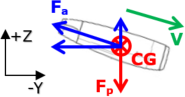
L'immagine mostra il motore in caduta nel piano YZ, come se un ipotetico osservatore stesse rivolgendo lo sguardo ad est.
Su questo piano si sviluppa la forza aerodinamica \( \mathbf{F_a} \). Una volta scomposta nelle componenti Y e Z, risulta evidente che la componente Z si oppone alla forza peso \( \mathbf{F_p} \) applicata nel baricentro (o centro di gravità) CG rallentando la caduta, mentre la componente Y (con verso +Y) frena il moto verso sud (verso -Y).
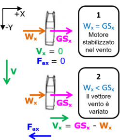
Questa, invece, è la vista dall'alto, in cui viene mostrato il piano XY.
La situazione 1 si ha un istante prima del disastro, quando il motore (e l'aereo) è stabilizzato nel vento, cioè è fermo rispetto al vento. In questa situazione, il motore ha una componente \(GS_x\) della velocità al suolo in direzione +X uguale alla componente \(W_x\) del vento, pertanto non si sviluppa alcuna forza lungo l'asse X, poiché il motore non si muove in questa direzione rispetto all'aria, anche se in realtà è presente una piccola componente \(V_x\) di \( \mathbf{V} \) (la TAS) dovuta al fatto che la prua vera non è esattamente uguale a 180°.
Quando il motore inizia a cadere, il vento inizia a variare sia nella direzione che nell'intensità, per cui la componente \(V_x\) non è più nulla e, pertanto, si genera una forza \(F_{a_x}\) con verso contrario a \(V_x\) che frena il moto verso est.
Le componenti \(y\) e \(z\) di \( \mathbf{F_a} \) possono essere calcolate tramite le equazioni:
$$ F_{a_y} = \frac{1}{2} \; \rho \; (GS_y - W_y) \; \| \mathbf{GS} - \mathbf{W} \| \; ( C_{rw}(TAS, T) \cdot A_c + C_{rv} \cdot S_g) $$
$$ F_{a_z} = \frac{1}{2} \; \rho \; GS_z \; \| \mathbf{GS} - \mathbf{W} \| \; ( C_{rw}(TAS, T) \cdot A_c + C_{rv} \cdot S_g) $$
in cui, oltre ai parametri già noti, \(C_{rw} \) è il coefficiente di resistenza del motore dovuto al windmilling e varia in funzione del numero di mach (quindi della TAS e della temperatura ambiente),
\(A_c\) è l'area frontale del compressore di bassa pressione (quello direttamente esposto all'aria),
\(C_{rv}\) è il coefficiente di resistenza dovuto all'attrito viscoso che l'aria sviluppa sulla superficie della gondola motore (è dello stesso tipo di quello sviluppato dall'ala di un aereo),
\(S_g\) è la superficie della gondola motore (non la sezione frontale, ma la superficie complessiva).
La componente \(x\) di \( \mathbf{F_a} \) può essere calcolata con l'equazione:
$$ F_{a_x} = \frac{1}{2} \; \rho \; (GS_x - W_x) \; \| \mathbf{GS} - \mathbf{W} \| \cdot C_{rl} \cdot A_l $$
in cui \(C_{rl}\) e \(A_l\) sono, rispettivamente, il coefficiente di resistenza e la sezione laterale della gondola.
È utile sottolineare che questo modello matematico del motore simula il motore reale con un'accuratezza di gran lunga superiore a quella ottenibile con il modello usato dai consulenti di parte imputata; si veda, ad esempio, il paragrafo "Caduta in mare → Traiettoria dei frammenti secondo la consulenza Neri-Giubbolini".
Siamo, così arrivati a definire tutto ciò che serve per simulare un motore che cade con l'asse longitudinale esattamente rivolto a sud (-Y) e parallelo alla velocità rispetto all'aria.
Sebbene le equazioni differenziali usate in questo paragrafo appaiano diverse da quelle usate per il corpo in caduta libera, in realtà non abbiamo fatto altro che sostituire la velocità rispetto all'aria con la somma vettoriale tra la velocità al suolo e quella del vento, ottenendo sempre la velocità rispetto all'aria. La forma è diversa, ma la sostanza è identica a quella delle equazioni per il corpo in caduta libera.
Siccome il programma scritto per la caduta libera è stato validato confrontando il risultato con la soluzione analitica (matematicamente esatta), se scriviamo un altro programma per la caduta del motore basandolo su quello per la caduta libera, otteniamo un programma la cui validità è stata già matematicamente dimostrata.
Ecco, dunque, il link al programma. Esso è composto da una parte iniziale comprendente la definizione dei parametri del motore e il codice necessario per la gestione dei vettori. Segue la funzione PARA() che restituisce i parametri ambientali in funzione della quota voluta che deve essere compresa tra 0 e 26000 ft. Per quote superiori a 26000 ft, la funzione restituisce valori privi di senso.
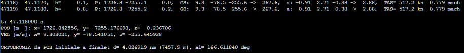
Una volta premuto "Run", il programma produce le righe che mostrano il veloce progredire della simulazione.
I valori mostrati sono:
numero sequenziale del passo d'integrazione;
tempo trascorso;
quota in piedi;
componenti \(x\), \(y\) e \(z\) della posizione;
componenti \(x\), \(y\) e \(z\) della velocità al suolo e sua magnitudine;
componenti \(x\), \(y\) e \(z\) dell'accelerazione e sua magnitudine;
TAS;
numero di mach.
L'ultima riga "ORTODROMIA ..." consente di calcolare la latitudine e la longitudine del punto d'impatto conoscendo le coordinate geografiche del motore al momento del disastro.
Se, ad esempio, ipotizziamo che l'abbattimento sia avvenuto 3,5 s dopo l'ultima risposta del transponder del DC-9, le coordinate iniziali sono 39,7256° N e 13,0273° E (ottenute dalla regressione parabolica spiegata nel paragrafo "Ultimi minuti → Parametri di volo prima dell'abbattimento").
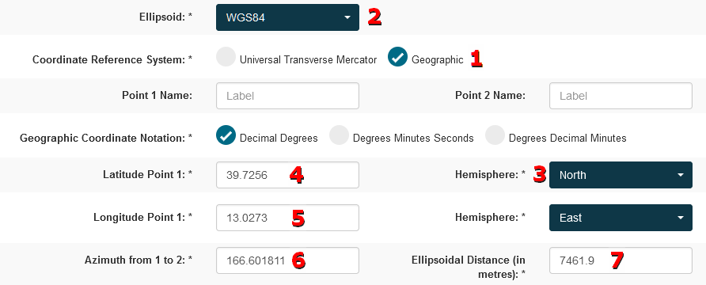
Il sito Geoscience Australia offre la possibilità di effettuare i calcoli che ci servono.
Selezioniamo prima "Coordinate Reference System: Geographic", poi "Ellipsoid: WGS84" e l'emisfero nord.
Facciamo, poi, copia&incolla dei vari numeri e premiamo "Submit".
I valori mostrati nell'immagine sono leggermente diversi da quelli ottenuti dall'attuale versione del programma; le piccole differenze dipendono dagli aggiornamenti (d'importanza marginale) apportati al programma (come il calcolo del numero di mach).
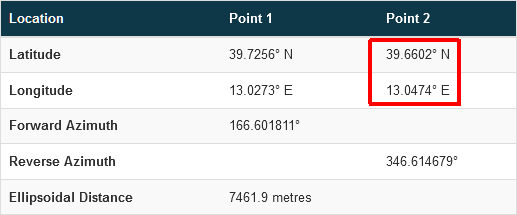
Dopo qualche istante, il sito calcola le coordinate del secondo punto ("Point 2") distante 7461,9 m dal "Point 1" e che si trova ad un azimut pari a 166.601811° da questo.
Abbiamo, così, ottenuto le coordinate del punto d'impatto sul mare del motore.
I parametri possono essere variati a piacimento per fare tutte le simulazioni desiderate.
Se, ad esempio, si desidera simulare la caduta con una picchiata iniziale di 55° (come fanno i consulenti di parte imputata), basta sovrascrivere il codice mostrato qui a sinistra a quello originale.
L'angolo da variare è il "-55" nella riga "th= -55 * deg2rad; // Picchiata".